Quinze critérios: doze numerados e três extras. Oito evidenciados no navegador (CA01, CA02, CA04, CA05, CA07, CA08, CA-extra-A e CA-extra-C, com onze prints), dois por artefato gerado pelo próprio sistema (CA09, com os dois PDFs anexados, e CA10, com a trilha de auditoria) e cinco cobertos pela suíte automatizada, onde o cenário exige um segundo município, dois operadores ou duas unidades do mesmo tipo (CA03, CA06, CA11, CA12 e CA-extra-B). A suíte de encaminhamentos fecha com 193 testes e 1275 asserções, e a suíte completa da API com 4581 testes, sem falhas. Nenhum critério em falha. A única pendência é declarada por desenho: a segunda metade do CA07 — o acesso ao prontuário pela unidade de destino — é a US-ACOMP-06 (#10888), HU seguinte na mesma branch.
| CA | Critério | Status |
|---|---|---|
| CA01 | Escolher a unidade de destino (happy path) | ATENDIDO · navegador + automatizado |
| CA02 | A escolha respeita o tipo de destino do código | ATENDIDO · navegador + automatizado |
| CA03 | Não é possível encaminhar para a própria unidade | ATENDIDO · automatizado |
| CA04 | Aviso sobre o efeito no acesso | ATENDIDO · navegador |
| CA05 | Os demais códigos continuam com destino em texto | ATENDIDO · navegador + automatizado |
| CA06 | Encaminhamento antigo não concede acesso | ATENDIDO · automatizado |
| CA07 | Completar a unidade em encaminhamento antigo sem desfecho | ATENDIDO · navegador + automatizado |
| CA08 | Encaminhamento com desfecho não é alterado | ATENDIDO · navegador + automatizado |
| CA09 | Formulário traz o nome da unidade escolhida | ATENDIDO · navegador + automatizado |
| CA10 | Alteração da unidade auditada | ATENDIDO · navegador + automatizado |
| CA11 | Contadores da remessa não mudam | ATENDIDO · automatizado |
| CA12 | Isolamento entre municípios | ATENDIDO · automatizado |
| CA-extra-A | Marcação no Painel Global (RN01/RN09) | ATENDIDO · navegador |
| CA-extra-B | Autor ou Master (D06) | ATENDIDO · automatizado |
| CA-extra-C | PUT não troca a classe do código (D08) | ATENDIDO · navegador + automatizado |
Critério (Gherkin): Dado que sou CLIENT_OPERADOR com CLIENT_FAMILY_VIEWER e lotação vigente no "CRAS Centro" Quando eu chamar GET /api/client/families/{silva}/referrals/options?social_unit_uuid={crasCentro} Então o código "13" vem com destination_unit_type_uuid = {tipo CREAS} E destination_units lista as unidades do município em atividade Quando eu chamar POST /api/client/families/{silva}/referrals com referral_code_uuid={13} e destination_social_unit_uuid={creas}, sem destination_organization Então recebo 201 E referrals.destination_social_unit_id = {creas.id} E referrals.destination_organization = "CREAS" (snapshot gravado pelo servidor)
Como foi testado: Como operador do tenant, no prontuário da família E2E Família No CRAS, aba Encaminhamentos → Registrar encaminhamento. Origem E2E CRAS Centro, código 13, unidade de destino E2E CREAS, objetivo preenchido, Salvar. Conferência do registro direto no banco.
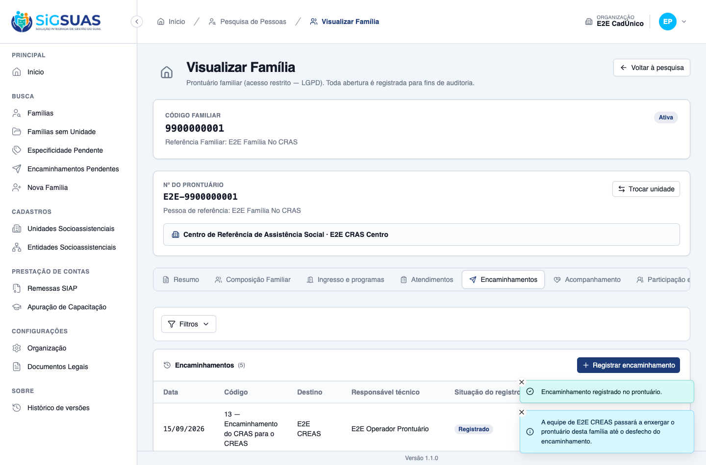
Critério (Gherkin): Dado que estou registrando um encaminhamento com o código "13" a partir do "CRAS Centro" Quando o front filtrar destination_units por destination_unit_type_uuid do código Então só aparecem unidades do tipo CREAS Quando eu forçar POST com destination_social_unit_uuid = {crasRural} Então recebo 422 em destination_social_unit_uuid com referral.destination_unit_not_selectable
Como foi testado: Abrir a lista de unidades de destino no formulário com o código 13 selecionado. A recusa no servidor é coberta pela suíte (unidade de tipo errado, paralisada e excluída, todas com a mesma mensagem).
Critério (Gherkin): Dado que registro a partir do "CREAS Norte" com o código "14" Quando eu chamar o options com social_unit_uuid = {creasNorte} Então destination_units não contém o "CREAS Norte" E um POST com destination_social_unit_uuid = {creasNorte} recebe 422
Como foi testado: Critério provado pela suíte: exige duas unidades do MESMO tipo (origem e destino candidatos), cenário que a massa de evidência do navegador não tem — no município E2E há um único CREAS.
Evidência por cobertura automatizada — ver Anexo.
Critério (Gherkin): Dado que escolhi o "CREAS" como unidade de destino no formulário Então vejo o aviso "A equipe de CREAS passará a enxergar o prontuário desta família até o desfecho do encaminhamento." Quando eu salvar Então o registro é salvo sem diálogo de confirmação E o toast de sucesso repete o aviso
Como foi testado: Escolher a unidade de destino e observar o aviso; salvar e observar os toasts.
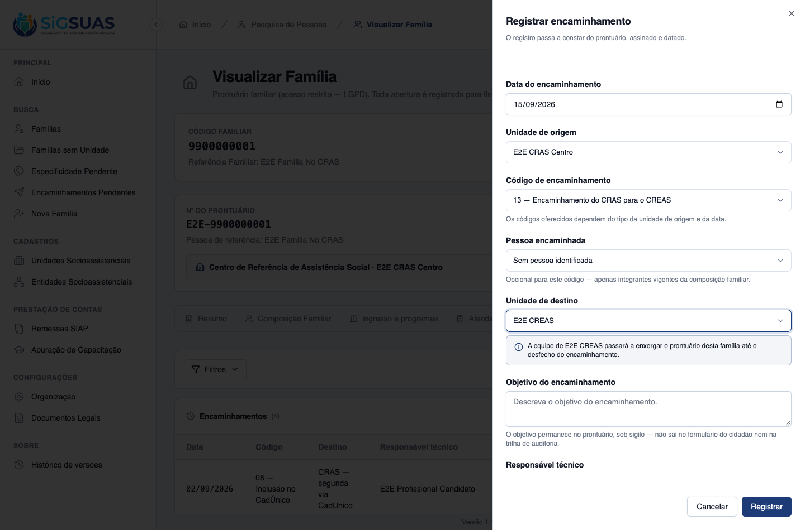
Critério (Gherkin): Dado que escolhi o código "05" (externo, destination_unit_type_uuid = null) Então o campo de destino é o input de texto livre de antes E um POST com destination_social_unit_uuid recebe 422 (prohibited) E um POST sem destination_organization recebe 422 com referral.destination_required
Como foi testado: No mesmo formulário, trocar o código para 05 (externo) e observar o campo de destino.
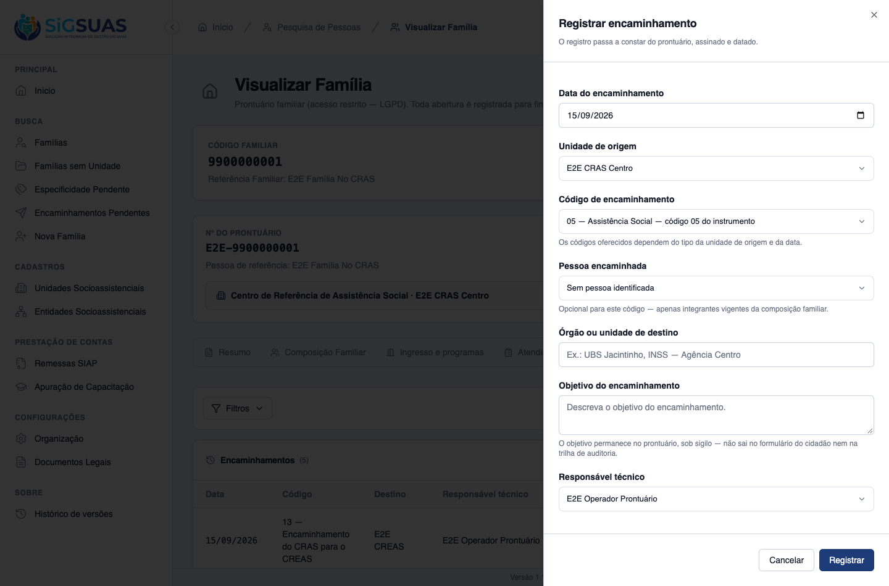
Critério (Gherkin): Dado um encaminhamento "13" registrado antes da migration, com destination_social_unit_id NULL e destination_organization = "CREAS Centro" Quando eu, lotado no "CREAS", abrir o prontuário da família Então recebo 403 unit_not_assigned E destination_social_unit_id continua NULL (nenhuma dedução)
Como foi testado: Critério de backend. A massa E2E tem um encaminhamento 13 anterior ao ajuste, com a chave estrangeira nula e o texto preservado (visível no CA07).
Evidência por cobertura automatizada — ver Anexo.
Critério (Gherkin): Dado o encaminhamento do CA06, com outcome = 'awaiting_return' E que sou o autor (created_by), mesmo sem lotação vigente na origem na data do encaminhamento Quando eu chamar PATCH /api/client/families/{f}/referrals/{r}/destination-unit com destination_social_unit_uuid = {creasCentro} Então recebo 200 E referrals.destination_social_unit_id = {creasCentro.id} E o profissional lotado no "CREAS Centro" passa a abrir o prontuário (via referral_received — US-ACOMP-06)
Como foi testado: No prontuário da família E2E Família Encaminhamento Legado, o encaminhamento antigo mostra o destino em texto. Acionar Definir unidade de destino, escolher E2E CREAS e confirmar.
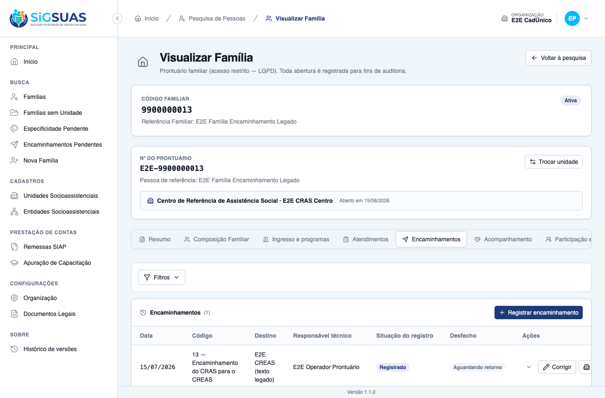
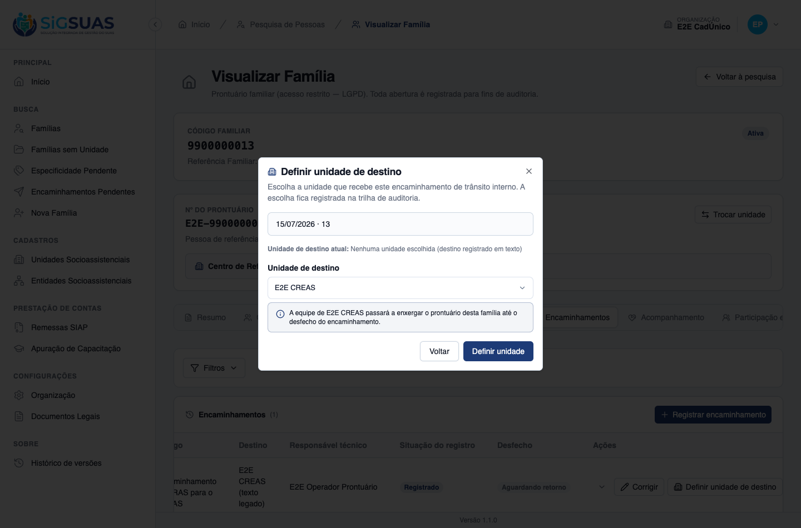
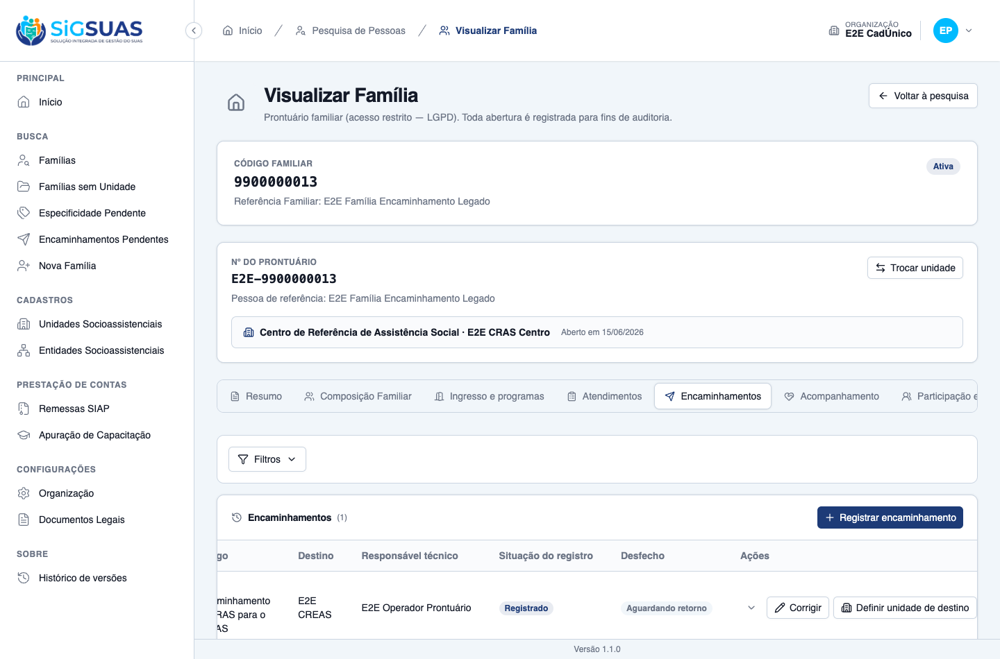
Critério (Gherkin): Dado um encaminhamento "13" com outcome = 'not_attended' Então ReferralResource.destination_unit_editable = false e a ação não é exibida Quando eu forçar o PATCH destination-unit Então recebo 409 com error_code = "referral_destination_locked_by_outcome"
Como foi testado: No encaminhamento registrado no CA01, lançar o desfecho Não atendido e observar a lista; depois forçar a chamada PATCH pela própria sessão autenticada do navegador.
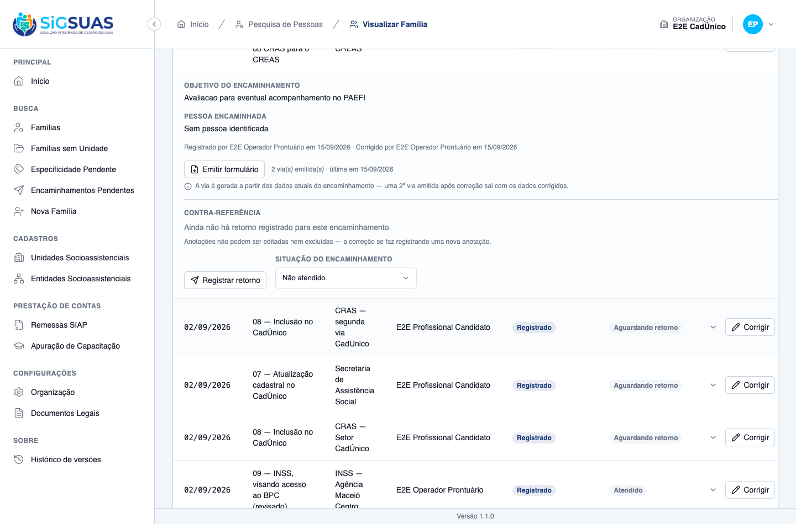
Critério (Gherkin): Dado um encaminhamento "13" com destination_social_unit_id = {creasCentro} ("CREAS Centro") Quando eu chamar POST …/referrals/{r}/form Então o PDF traz "CREAS Centro" em "Órgão ou unidade de destino" E, se a unidade for renomeada para "CREAS Centro-Sul", a reemissão traz o nome novo E os demais campos do PDF são idênticos aos de antes
Como foi testado: Emitir o formulário do cidadão pelo prontuário; renomear a unidade no cadastro para “E2E CREAS Centro-Sul”; reemitir o formulário. Os dois PDFs estão anexados ao dossiê.
Evidência por cobertura automatizada — ver Anexo.
Critério (Gherkin): Dado que alterei a unidade de destino de {creasCentro} para {creasNorte} Quando eu consultar activity_log (log_name = 'referral', subject = o encaminhamento) Então há um evento 'updated' com old.destination_social_unit_id = {creasCentro.id}, attributes.destination_social_unit_id = {creasNorte.id}, causer_id e created_at
Como foi testado: Depois da ação do CA07 (feita pela interface), consultar a trilha do encaminhamento. Anexo activity-log-ca10.txt.
Evidência por cobertura automatizada — ver Anexo.
Critério (Gherkin): Dado o cenário de AttendanceReportReferralCrossTest, acrescido de encaminhamentos "13"/"14" com unidade de destino Quando eu chamar GET /api/client/attendance-reports do mesmo período Então os três contadores do 15.6 (cadunico_inclusion, cadunico_update, bpc) têm os mesmos valores de antes
Como foi testado: Critério de backend, coberto em AttendanceReportReferralCrossTest; o serviço de apuração não foi tocado pelo commit (conferido por diff).
Evidência por cobertura automatizada — ver Anexo.
Critério (Gherkin): Dado que sou usuário do município A Quando eu chamar o options Então destination_units só contém unidades do tenant A E um POST/PATCH com destination_social_unit_uuid de unidade do tenant B recebe 422 com a mesma mensagem de unidade inexistente
Como foi testado: Critério de backend (exige um segundo município). Coberto pela suíte de encaminhamentos e pela de isolamento.
Evidência por cobertura automatizada — ver Anexo.
Critério (Gherkin): Dado que sou ADMIN no admin/ Quando eu chamar PUT /api/manager/referral-codes/{13} com destination_unit_type_uuid = {tipo CREAS} Então recebo 200 e o activity_log (log_name 'referral_code') registra a mudança Quando eu enviar destination_unit_type_uuid igual ao restricted_to_unit_type Então recebo 422 com referral_code.destination_type_equals_origin_type
Como foi testado: No Painel Global, catálogo de códigos: conferir a coluna nova, abrir o código 13, tentar salvar com o tipo de destino igual ao de origem, corrigir e conferir a trilha. Ao final o código foi desmarcado e remarcado para gerar trilha com autor.
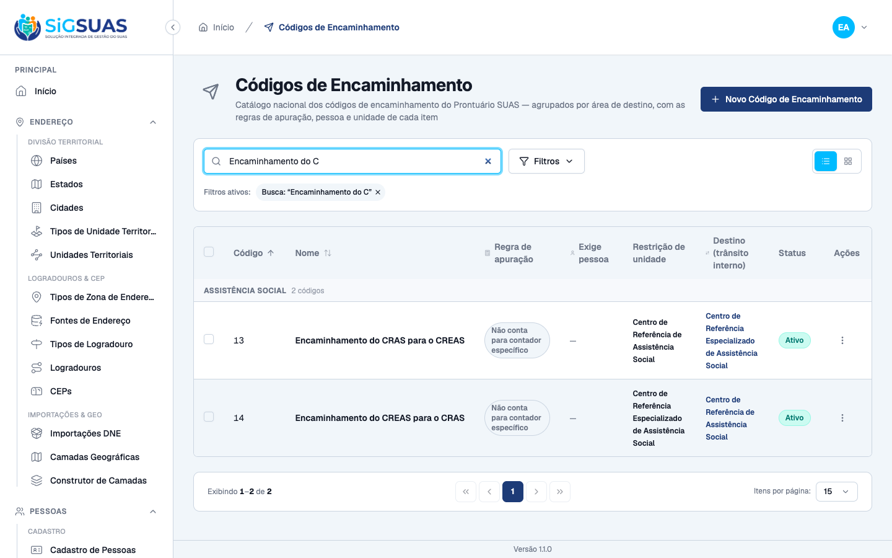
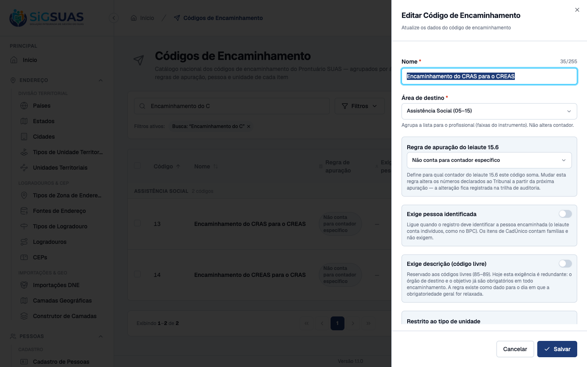
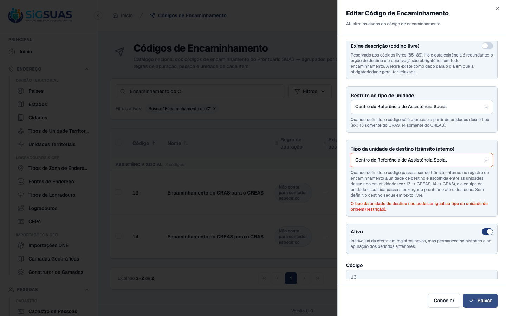
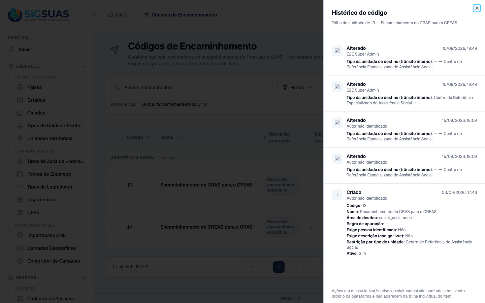
Critério (Gherkin): Dado um encaminhamento "13" sem desfecho registrado pelo operador X Quando o operador Y, com acesso ao prontuário, chamar o PATCH destination-unit Então recebo 403 com error_code = "referral_destination_not_author" E o Master recebe 200 na mesma chamada
Como foi testado: Critério de backend (exige dois operadores com acesso ao mesmo prontuário e o Master).
Evidência por cobertura automatizada — ver Anexo.
Critério (Gherkin): Dado um encaminhamento "05" (externo) Quando eu chamar PUT com referral_code_uuid = {13} Então recebo 422 com error_code = "referral_code_transit_class_change"
Como foi testado: Abrir a correção do encaminhamento interno e observar o campo de destino e os códigos oferecidos; depois forçar o PUT trocando o 13 por um código externo.
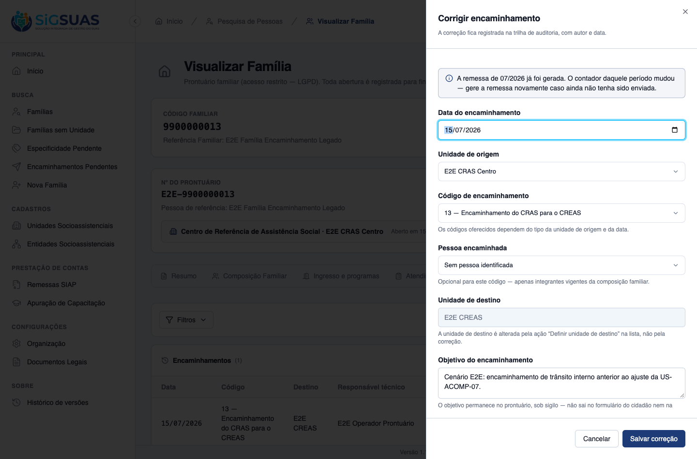
A última linha do CA07 (“o profissional lotado no CREAS passa a abrir o prontuário”) depende do terceiro eixo de acesso, que é a US-ACOMP-06 (#10888) — HU seguinte, planejada para a mesma branch. Esta entrega cria a coluna, o índice parcial e o caminho de escrita que a 06 consome; o dossiê da 06 fecha essa metade. Nada além disso ficou pendente nos demais critérios.
O aviso interpola o nome da unidade (“A equipe de E2E CREAS passará…”), enquanto o exemplo do CA04 usa o tipo (“A equipe de CREAS”). A mensagem de unidade incompatível na correção também pode ser revista. Ambas são decisão de redação, registradas para o PO e sem efeito sobre o comportamento.
A lista de unidades de destino considera apenas os tipos de códigos internos ativos, enquanto o servidor aceita a unidade mesmo com o código inativado. Se o 13 ou o 14 for inativado, o diálogo “Definir unidade de destino” de um encaminhamento antigo fica sem opções. Registrado como acompanhamento de backend; não afeta nenhum critério desta HU.
As três migrations aplicam e revertem em base com dados (anexo backend/migrate-rollback.txt). O EXPLAIN confirma que o predicado do eixo da US-ACOMP-06 usa o índice parcial novo com varredura apenas por índice (backend/explain-idx.txt). A invariante §8.5 devolve zero linhas, com contraprova na suíte (backend/invariante-8-5.txt). Nenhuma permissão nova (backend/permissions-sync.txt).
PASS Tests\Unit\FollowUpMonthsAndCoherenceTest ✓ it admits not_applicable ONLY in referrals_effective (RN04) 0.49s ✓ it suggests not_applicable IF AND ONLY IF the referral list is empt… 0.02s PASS Tests\Unit\Models\ReferralCodeTest ✓ it has correct fillable, casts and defaults 0.02s ✓ it uses soft deletes, HasUuid, LogsActivity and resolves by uuid 0.05s ✓ it is a GLOBAL lookup — never tenant-scoped (RN08) 0.02s ✓ it has no global scope of is_active — history and remittance never… 0.02s ✓ it keeps the four rules as data, cast to the enums (RN03–RN06) 0.02s ✓ it accepts NULL as a legitimate remittance counter value (CA02) 0.02s ✓ it enforces unique code — even against soft-deleted rows (RN09) 0.02s ✓ it configures the activity log with ALL the audited fields (RN10/§1… 0.02s PASS Tests\Unit\Models\ReferralCounterReferenceTest ✓ it is tenant-scoped and uuid-routed (§6.1/RN11) 0.02s ✓ it is APPEND-ONLY by design: no SoftDeletes and no LogsActivity — t… 0.02s ✓ it never exposes an activity log configuration — not even an empty… 0.02s PASS Tests\Unit\Models\ReferralFormEmissionTest ✓ it is tenant-scoped and uuid-routed, with emitted_at as datetime (§… 0.02s ✓ it is APPEND-ONLY by design: no SoftDeletes and no LogsActivity — t… 0.02s ✓ it has NO file_path column — the PDF never rests in storage (P1) 0.02s PASS Tests\Unit\Models\ReferralTest ✓ it has the expected casts and defaults — status registered, outcome… 0.02s ✓ it is tenant-scoped, soft-deletable, uuid-routed and audited (RN14/… 0.02s ✓ it NEVER logs objective nor cancel_reason — and DOES log the struct… 0.02s ✓ it marks cancellation by STATUS, keeping the row alive — never soft… 0.06s ✓ it resolves the referral code and the family member even when soft-… 0.03s PASS Tests\Feature\Api\Client\AttendanceReportReferralCrossTest ✓ it never feeds the CadUnico counters from attendance type 4 — 9 att… 0.15s ✓ it keeps the three 15.6 counters identical when internal-transit re… 0.12s PASS Tests\Feature\Api\Client\AttendanceReportTest ✓ it declares exactly the one remaining unavailable counter — the F2… 0.08s ✓ it lights the three referral counters with distinct families and pe… 0.10s ✓ it counts the same family ONCE with two inclusion referrals in the… 0.09s ✓ it drops a cancelled referral from the counters while it stays visi… 0.11s ✓ it keeps counting a referral whose outcome became not_attended — th… 0.09s ✓ it counts a retroactive referral in the month it was made, not the… 0.08s ✓ it keeps counting past referrals of a code inactivated in the Globa… 0.09s ✓ it keeps counting past referrals of a code SOFT-DELETED in the Glob… 0.08s ✓ it declares zero on the three referral counters for a unit without… 0.09s ✓ it never feeds the BPC counter from a referral row without a person… 0.08s PASS Tests\Feature\Api\Client\PendingReferralsTest ✓ it lists the 14 awaiting referrals of the unit with family, destina… 0.15s ✓ it scopes the list: Master sees every unit of the tenant; the opera… 0.10s ✓ it refuses the pending list to an operator WITHOUT the LGPD add-on… 0.08s ✓ it keeps the pending line renderable after the family record is sof… 0.08s ✓ it refuses a sort parameter — the oldest-first order is the rule (§… 0.08s PASS Tests\Feature\Api\Client\ReferralControllerTest ✓ it registers a referral signed and dated, born awaiting_return (CA0… 0.09s ✓ it refuses a BPC referral WITHOUT the person, naming family_member_… 0.08s ✓ it saves a BPC referral WITH the person, deriving person_id from th… 0.09s ✓ it saves a CadUnico referral WITHOUT person — it counts FAMILIES (C… 0.09s ✓ it refuses a person outside the CURRENT family composition (RN05) 0.08s ✓ it refuses the CREAS-only code from a CRAS unit — and offers the CR… 0.10s ✓ it refuses an INACTIVE code — only the select filters is_active (RN… 0.08s ✓ it accepts a referral whose destination is the OWN unit — no origin… 0.09s ✓ it refuses saving without destination or objective, naming the miss… 0.08s ✓ it refuses a future date (CA09/RN06) 0.08s ✓ it accepts TODAY at 23h in the app timezone — the boundary never re… 0.09s ✓ it saves a retroactive referral in a remitted month AND returns the… 0.09s ✓ it does NOT warn when the month remittance is pending or failed (CA… 0.09s ✓ it keeps social_unit_id as a SNAPSHOT after the family moves to ano… 0.09s ✓ it refuses a referral for a family WITHOUT a reference unit (CA17) 0.08s ✓ it demands the person when the update swaps the code to BPC (CA16) 0.10s ✓ it re-validates the responsible against the EFFECTIVE date — changi… 0.10s ✓ it re-validates code×unit compatibility on the EFFECTIVE pair — mov… 0.09s ✓ it clears the person when the update sends family_member_uuid null… 0.10s ✓ it warns for the OLD and the NEW month when an update moves the dat… 0.09s ✓ it cancels keeping the row, and refuses a second cancel with 409 (C… 0.10s ✓ it emits the SAME remittance warning when cancelling a referral of… 0.09s ✓ it refuses editing a CANCELLED referral with 409 — cancelled is ter… 0.10s ✓ it prohibits client-sent authorship, status, outcome and person_id… 0.08s ✓ it returns units, responsibles, compatible codes and the remittance… 0.08s ✓ it offers only UNRESTRICTED codes when no origin unit is given in o… 0.08s PASS Tests\Feature\Api\Client\ReferralCounterReferenceTest ✓ it registers the counter-reference and the outcome in the SAME requ… 0.09s ✓ it keeps the outcome untouched when the note comes alone — annotati… 0.09s ✓ it keeps both annotations in chronological ASC order, each with its… 0.09s ✓ it has NO route to edit or delete an annotation — 405 on the collec… 0.09s ✓ it lets the outcome be corrected from not_attended to attended (CA0… 0.08s ✓ it refuses an outcome outside the four states and an empty one (§10… 0.08s ✓ it requires the note and caps it at 5000 chars — without echoing th… 0.08s ✓ it refuses a counter-reference on a cancelled referral with 409 — a… 0.08s ✓ it refuses an outcome change on a cancelled referral with 409 — can… 0.07s ✓ it denies the counter-reference for a family of another unit, namin… 0.09s PASS Tests\Feature\Api\Client\ReferralDestinationUnitTest ✓ it offers the destination type of code 13 and the active destinatio… 0.10s ✓ it lists every eligible destination unit when the origin is not inf… 0.08s ✓ it drops a destination type from destination_units when its interna… 0.08s ✓ it refuses a unit of the WRONG type, a PARALYSED one and a SOFT-DEL… 0.10s ✓ it never offers nor accepts the ORIGIN as destination — CREAS Norte… 0.10s ✓ it keeps external codes on free text: unit prohibited, text require… 0.10s ✓ it keeps the pre-migration referral with FK NULL and text preserved… 0.10s ✓ it lets the AUTHOR complete the unit through PATCH even without ass… 0.10s ✓ it locks the unit once there is an outcome — editable false + 409;… 0.10s ✓ it changes the unit of an OPEN internal referral, rewriting the sna… 0.10s ✓ it answers 422 with the SAME message for a unit of ANOTHER tenant a… 0.10s ✓ it answers 403 referral_destination_not_author for another operator… 0.11s ✓ it refuses swapping the code between external and internal classes… 0.13s ✓ it refuses swapping to another INTERNAL code whose destination type… 0.10s ✓ it refuses moving the ORIGIN onto the persisted destination unit —… 0.11s ✓ it does not revalidate the destination when the FK is NULL (legacy)… 0.10s ✓ it treats a CLIENT_ADMIN of ANOTHER tenant as a plain operator here… 0.09s ✓ it adds NO ability — the destination-unit route has no can: of its… 0.16s ✓ it leaves ZERO rows violating invariant 8.5 after a mixed workload… 0.10s PASS Tests\Feature\Api\Client\ReferralIndexTest ✓ it lists referrals chronologically by referred_on, newest first, wi… 0.09s ✓ it breaks same-day ties by created_at DESC then id DESC — the order… 0.08s ✓ it paginates stably when five referrals share the same day — no rep… 0.09s ✓ it keeps the cancelled referral visible, marked, with reason — it l… 0.08s ✓ it filters by period on the referral date 0.08s ✓ it filters by referral code — and keeps filtering after the code is… 0.09s ✓ it filters by responsible professional, status and outcome 0.09s ✓ it refuses a sort parameter — the chronological order with tiebreak… 0.08s ✓ it writes ZERO activity_log rows for listing, filtering and paginat… 0.09s ✓ it runs a constant number of queries regardless of how many referra… 0.10s PASS Tests\Feature\Api\ReferralCodeControllerTest ✓ it lists referral codes exposing uuid and the four rules — never id 0.06s ✓ it shows the remittance counter and the person requirement of the B… 0.04s ✓ it shows NULL counter as an explicit "no specific counter" label (C… 0.04s ✓ it shows the unit-type restriction as an object with uuid, code and… 0.04s ✓ it creates a referral code with the code informed by the admin, map… 0.04s ✓ it rejects the uuid of a SOFT-DELETED unit type — the RN06 restrict… 0.04s ✓ it keeps showing the restriction when the unit type is soft-deleted… 0.04s ✓ it preserves the restriction when the PUT OMITS the key — absent ke… 0.04s ✓ it clears the restriction when the PUT sends the key explicitly nul… 0.04s ✓ it keeps a code restricted to a soft-deleted type EDITABLE via key… 0.05s ✓ it flags a live unit type with is_deleted false in the restriction… 0.03s ✓ it rejects a code outside the 2-digit zero-padded pattern of the in… 0.03s ✓ it rejects a duplicate code — the code is never generated (CA05) 0.03s ✓ it requires code, name and destination_area (CA05/RN03) 0.03s ✓ it rejects a destination area outside the enum, and accepts NULL re… 0.03s ✓ it rejects a remittance counter outside the enum — including the AT… 0.03s ✓ it audits the change of an apuration rule with old and new values i… 0.03s ✓ it exposes the audit trail with causer and pagination (CA11) 0.03s ✓ it soft deletes an unused referral code 0.03s ✓ it bulk deactivates and bulk activates referral codes, logging the… 0.03s ✓ it rejects soft-deleted uuids in every bulk action at validation ti… 0.03s ✓ it filters actives for the new-record select, and returns inactives… 0.03s ✓ it filters by destination area — the health area returns only its r… 0.03s ✓ it filters by remittance counter and by restricted unit type uuid (… 0.03s ✓ it rejects filter values outside the enums with 422 0.03s ✓ it blocks write without permission 0.02s ✓ it gives the admin_operador read-only access — every write is 403 (… 1.61s ✓ it lets the ADMIN role exercise all eight abilities end to end 1.57s ✓ it rejects client-guard tokens on every write route with 401, creat… 0.03s ✓ it keeps the shared read alive for the client guard — the tenant se… 0.03s ✓ it marks code 13 as internal transit to CREAS via PUT — 200, object… 0.04s ✓ it rejects a destination type equal to the origin type — on POST an… 0.04s ✓ it follows the RN06 contract for the destination type: null clears,… 0.04s ✓ it filters by is_internal_transit — true only the marked codes, fal… 0.04s ✓ it compares RESOLVED type ids on RN01 — the same uuid in a differen… 0.03s PASS Tests\Feature\Api\ReferralCodeUsageTest ✓ it refuses to delete a code in use with 422, guiding deactivation (… 0.04s ✓ it still soft deletes a code NOT referenced by any consumer (CA08) 0.03s ✓ it still deletes a code NOT referenced by any referral under the pr… 0.03s ✓ it refuses to delete a code referenced by a REAL referral — CA08 da… 0.04s ✓ it ignores a registered consumer whose table does not exist yet (Sc… 0.03s ✓ it bulk destroy is ATOMIC: one item in use blocks all three and is… 0.03s ✓ it bulk destroys unused codes, logging the bulk event with author (… 0.03s PASS Tests\Feature\Client\FamilyFollowUpEvaluationTest ✓ it suggests not_applicable ONLY when the period has no referral (CA… 0.10s ✓ it lists the referrals of the period with outcome and counter-refer… 0.08s ✓ it cuts the referrals by PERIOD and by the follow-up UNIT (D11) 0.08s PASS Tests\Feature\Console\SyncPermissionsTest ✓ it keeps referral-codes write abilities out of the client guard rol… 1.66s ✓ it grants the Operacional Global read-only access to referral codes… 1.60s PASS Tests\Feature\Family\ReferralAuditTest ✓ it NEVER leaks the objective nor the cancel reason into the activit… 0.10s ✓ it never echoes the objective in validation messages nor in denial… 0.11s ✓ it audits the destination unit change with old/attributes of the FK… 0.09s PASS Tests\Feature\Family\ReferralCounterReferenceAuditTest ✓ it NEVER writes the annotation into activity_log — the table row it… 0.08s ✓ it audits the outcome change with author and de/para in attribute_c… 0.09s ✓ it never echoes the note in the cancelled 409 body (RN03) 0.07s PASS Tests\Feature\Migrations\MarkInternalTransitReferralCodesMigrationTest ✓ it marks 13 → CREAS and 14 → CRAS on an existing base, leaving a tr… 0.03s ✓ it is idempotent — a second run changes nothing and adds no trail e… 0.03s ✓ it is a no-op for a missing code and never overrides a value alread… 0.03s ✓ it resolves the destination types even when they are soft-deleted —… 0.03s ✓ it skips a code already marked with a NULL-safe check — a soft-dele… 0.03s ✓ it never deduces destination_social_unit_id from the text of a pre-… 0.04s ✓ it logs a warning (without PII) when the code exists but its destin… 0.03s PASS Tests\Feature\Referral\ReferralFormPdfTest ✓ it renders the RN08 items and NEVER the objective, the uuid nor the… 0.08s ✓ it prints the referred PERSON name when the referral identifies one… 0.07s ✓ it STILL prints unit, phone and professional after they are soft-de… 0.07s ✓ it returns a PDF stream and records WHO emitted and WHEN — re-emiss… 0.30s ✓ it never writes ANY file to storage — the PDF only exists in the re… 0.19s ✓ it refuses to emit the form for a CANCELLED referral with 409 — and… 0.08s ✓ it prints the destination unit NAME from the registry, follows a re… 0.18s PASS Tests\Feature\Seeders\IntakeLookupSeedersTest ✓ it marks exactly the nine referral forms as requiring the referring… 0.04s PASS Tests\Feature\Seeders\ReferralCodeSeederTest ✓ it seeds the seven ranges of the instrument, zero-padded, never fil… 0.05s ✓ it groups each range under its destination area (RN03/CA12) 0.05s ✓ it marks EXACTLY three items with a remittance counter — 07, 08 and… 0.05s ✓ it marks EXACTLY one item requiring an identified person — the BPC… 0.05s ✓ it marks EXACTLY two items restricted by unit type — 13 to CRAS, 14… 0.05s ✓ it marks EXACTLY two items as internal transit — 13 to CREAS, 14 to… 0.06s ✓ it marks the five free codes 85–89 with the free area and the descr… 0.05s ✓ it is idempotent — running the seeder twice does not duplicate nor… 0.05s ✓ it guarantees the social unit types when run standalone (RN06 depen… 0.05s ✓ it resolves CRAS/CREAS ids even when the unit types are soft-delete… 0.06s PASS Tests\Feature\TenantIsolation\AttendanceReportIsolationTest ✓ it never counts tenant B referrals in the tenant A referral counter… 0.08s PASS Tests\Feature\TenantIsolation\ReferralCounterReferenceIsolationTest ✓ it lists pending referrals of the OWN tenant only — the other munic… 0.08s ✓ it answers 404 for the whole new surface on a family of ANOTHER ten… 0.09s ✓ it answers 404 when the referral belongs to ANOTHER family of the s… 0.08s ✓ it scopes counter-references by tenant through the BelongsToTenant… 0.09s PASS Tests\Feature\TenantIsolation\ReferralIsolationTest ✓ it answers 404 for a family of ANOTHER tenant with the SAME body as… 0.09s ✓ it answers 404 when the referral belongs to ANOTHER family — scoped… 0.10s ✓ it answers 403 unit_not_assigned for a family of another unit — WIT… 0.09s ✓ it answers 403 no_active_assignment when the professional has no as… 0.09s ✓ it answers 403 for the operator WITHOUT the LGPD add-on — the class… 0.08s ✓ it scopes referrals by tenant through the BelongsToTenant global sc… 0.09s ✓ it lists only the tenant own destination units in options and refus… 0.12s Tests: 193 passed (1275 assertions) Duration: 20.70s